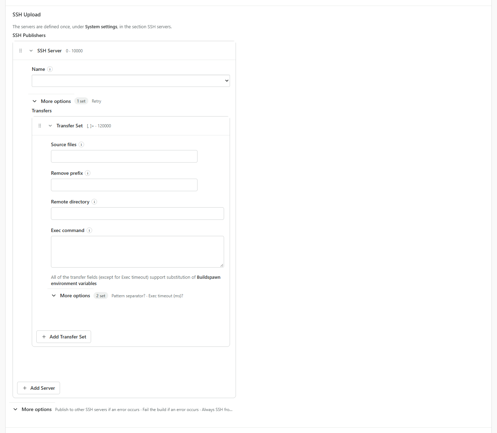

SSH Upload
Copies files from the workspace to a remote server over SFTP, with include patterns, and can run a command afterwards.
When to use it
Use it to put a Linux server build or a patch on a test server.
How to set it up
- Open the build configuration and click Settings › Build Steps.
- Click Add build step. Type
SSH Uploadin Filter step types if you like, then click the SSH Upload tile (group Upload and deploy). - Type a Step name, for example
Upload server. - Fill in the fields described below.
- Optional: set Execute step, Conditions and Retry on failure. See The steps list and the step editor.
- Click Save.

Every field
| Field | What it does | Default | Example |
|---|---|---|---|
| Name (SSH Server) | The server to use, chosen from the servers defined once under Settings › System. A server marked [No Exec] cannot run commands. | First server | build-linux |
| Verbose output in console | More detail in the log. | Off | On |
| Credentials | Optional credentials to use instead of the server's own. | Server's own | |
| Retry (Retries, Delay) | Try again when a transfer fails: how many times and the delay in milliseconds. | Off | 3 retries, 10000 ms |
| Label | Only publish to this server when the label matches. For parameterised publishing. | None | |
| Publish to other SSH servers if an error occurs | Keep going with the other servers when one fails. | Off | On |
| Fail the build if an error occurs | Fail the step when a transfer or command fails. | On | On |
| Always SSH from master | Make the transfer from the server instead of from the agent. | Off | Off |
| Source files | Files to upload: a comma-separated list of Ant includes, such as **/*.jar. The base folder is the workspace. | Empty | Builds/LinuxServer/** |
| Remove prefix | The first part of the file path that is not created on the server. All source paths must start with it. | Empty | Builds/LinuxServer |
| Remote directory | Optional destination folder, below the one in the server settings. It is created if missing. | Empty | /srv/skyforge/server |
| Exec command | A command to run on the server after the files are copied. A transfer set needs a source pattern, an exec command, or both. | Empty | ./deploy.sh |
| Exclude files (More options) | Comma-separated Ant excludes. | Empty | **/*.log,**/*.tmp |
| Pattern separator (More options) | Regular expression that splits the include and exclude patterns. Default [, ]+. Use a single comma to keep spaces in names. | [, ]+ | , |
| No default excludes (More options) | Do not use Ant's default excludes. | Off | Off |
| Make empty dirs (More options) | Create directories that match the pattern even when empty. | Off | Off |
| Flatten files (More options) | Create only files, no folders. File names must be unique or the step fails. | Off | Off |
| Remote directory is a date format (More options) | Treat the remote directory as a date pattern. | Off | Off |
| Exec timeout (ms), Exec in pty (More options) | As in SSH Exec. | ||
| Add Transfer Set | Add more sets. They run in order, so put an exec before a copy by using two sets. | One set |
A worked example
Copy the Linux server build to the test box and unpack it. Step name Upload server, Name build-linux, Source files Builds/LinuxServer/**, Remove prefix Builds/LinuxServer, Remote directory /srv/skyforge/server, Exec command ./post-deploy.sh.
What you see when it runs
The console says it is connecting, then Transferred N file(s), the output of the command, and that it is disconnecting.
Problems and fixes
| Problem | What to do |
|---|---|
| Failed to remove prefix from file named … | All source paths must start with Remove prefix. |
| Duplicate filename detected in flatten mode | Two files have the same name. Turn off Flatten files. |
| Could not create or change to directory | Check the remote directory and the account's rights. |